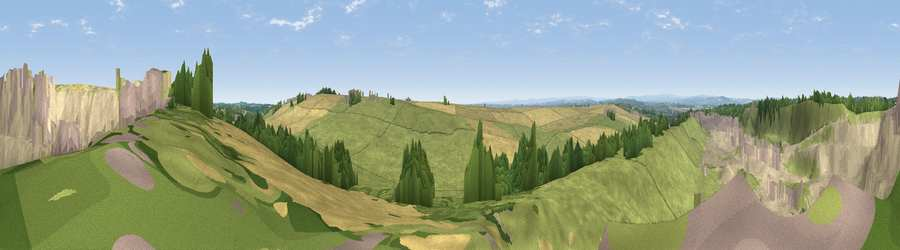

Viewpoint near Trimdon
#16105 in England · top 36% of its area beats it · near TrimdonWhere it is
The exact computed spot (NZ 35275 35075). Click the marker for map links.
The view, rendered

A 360° render of this exact spot computed from the terrain model, tree cover and land cover — summer colours, afternoon light, calibrated against photographs of famous viewpoints. Real trees, hedges and buildings will differ in detail.
The panorama
Grey silhouette: terrain skyline in each direction (720 bearings, Earth curvature and refraction included). Dashed green: skyline with trees (+15 m) and buildings (+8 m) as obstacles. Blue strip: how far the ground is visible on each bearing.
Where the view opens
Wedge length = distance to the farthest visible ground on that bearing (vegetation-aware). Rings at 10, 25 and 50 km.
What fills the view
42% grassland · 40% bare ground · 11% cropland · 4% woodland · 2% built-up
Angular shares of the visible panorama (visual magnitude), not map area. Landscape diversity 0.51 (0–1 Shannon).
Key numbers
More beautiful places nearby
The staircase of upgrades: each row has a higher view potential than everything closer. Driving times are estimates from straight-line distance, calibrated against real road routing — check an actual route before setting out.
| Place | Direction | Drive | Score |
|---|---|---|---|
| Viewpoint near Kelloe | NNE · 0 km | ~1 min | 61.4 |
| Catley Hill | SE · 1 km | ~3 min | 67.4 |
| Viewpoint near Quarrington Hill | NW · 4 km | ~9 min | 73.1 |
| Viewpoint near Easington Colliery | NE · 14 km | ~25 min | 74.4 |
| Viewpoint near Houghton-le-Spring | N · 16 km | ~28 min | 76.0 |
| Viewpoint near Sunniside | NNW · 26 km | ~42 min | 77.6 |
| Viewpoint near Newton Under Roseberry | SE · 27 km | ~43 min | 78.3 |
| Viewpoint near Lazenby | SE · 27 km | ~43 min | 86.4 |
54.70946, -1.45404 · source: screening · position refined by local search. Computed location — check access rights before visiting.